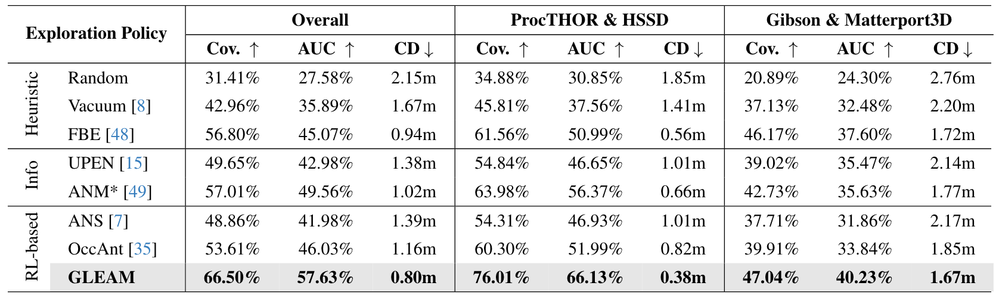

GLEAM: Learning Generalizable Exploration Policy for Active Mapping
in Complex 3D Indoor Scenes
ICCV 2025
We introduce GLEAM, a unified generalizable exploration policy for active mapping in complex 3D indoor scenes, trained and evaluated on 1,152 diverse scenes from our benchmark GLEAM-Bench.
Our cross-dataset generalization to an unseen real-scan scene Matterport3D achieves 83.67% coverage using 40 keyframes, without fine-tuning and prior knowledge.
Generalizability Evaluation
Active Mapping Process
HSSD
ProcTHOR
Matterport3D
Matterport3D
Gibson
ProcTHOR
To demonstrate the superior generalizability of GLEAM, We evaluate it on 128 unseen diverse scenes from ProcTHOR, HSSD, Gibson, and Matterport3D (cross-dataset). Some representative scenes are shown above.
Performance Comparison
The visualization results of ANM, OccAnt, and GLEAM on three representative unseen complex scenes from the test set of GLEAM-Bench. The methods share the same random initial poses for each scene.
Abstract
Generalizable active mapping in complex unknown environments remains a critical challenge for mobile robots.
Existing methods, constrained by insufficient training data and conservative exploration strategies, exhibit limited generalizability across scenes with diverse layouts and complex connectivity.
To enable scalable training and reliable evaluation, we introduce GLEAM-Bench, the first large-scale benchmark designed for generalizable active mapping with 1,152 diverse 3D scenes from synthetic and real-scan datasets.
Building upon this foundation, we propose GLEAM, a unified generalizable exploration policy for active mapping.
Its superior generalizability comes mainly from our semantic representations, long-term navigable goals, and randomized strategies.
It significantly outperforms state-of-the-art methods, achieving 66.50% coverage (+9.49%) with efficient trajectories and improved mapping accuracy on 128 unseen complex scenes.
GLEAM-Bench
A benchmark for generalizable active mapping policies in complex 3D indoor scenes

- Table: The data sources for existing active mapping methods, with limited high-quality scenes employed in prior works.
- Figure: The distribution of 1,152 scenes by the number of rooms in GLEAM-Bench.
- Overview: These curated scene meshes are characterized by near-watertight geometry, diverse floorplan (≥10 types), and complex interconnectivity. We unify these multi-source datasets through filtering, geometric repair, and task-oriented preprocessing.
- Figure: The distribution of 1,152 scenes by the number of rooms in GLEAM-Bench.
- Overview: These curated scene meshes are characterized by near-watertight geometry, diverse floorplan (≥10 types), and complex interconnectivity. We unify these multi-source datasets through filtering, geometric repair, and task-oriented preprocessing.
GLEAM
A unified policy explores 66.50% areas (+9.49%) with efficient trajectories
across 128 unseen complex scenes.
The overview of our framework. Trained on 1,024 diverse indoor scenes, GLEAM processes depth observations and agents' poses to iteratively update a global map. Then an egocentric map is extracted and augmented with exploration frontiers to capture semantic exploration cues. We employ a lightweight Transformer encoder to analyze the egocentric map and trajectory history for long-term goal prediction. The reward function of coverage is computed by the global map and ground-truth occupancy map.
Quantitative Results

The generalization results of exploration policies for active mapping on 128 unseen complex indoor scenes from our GLEAM-Bench, including two synthetic datasets (ProcTHOR, HSSD) and two real-scan datasets (Gibson, Matterport3D).
Citation
If you find this project helpful, please cite us:@article{chen2025gleam,
author = {Chen, Xiao and Wang, Tai and Li, Quanyi and Huang, Tao and Pang, Jiangmiao and Xue, Tianfan},
title = {GLEAM: Learning Generalizable Exploration Policy for Active Mapping in Complex 3D Indoor Scenes},
booktitle = {Proceedings of the IEEE/CVF International Conference on Computer Vision (ICCV)},
year = {2025},
}Thanks for your attention! If you have any questions or suggestions, please feel free to contact us (cx123@ie.cuhk.edu.hk).
More details and results can be found in our paper and code repository :)